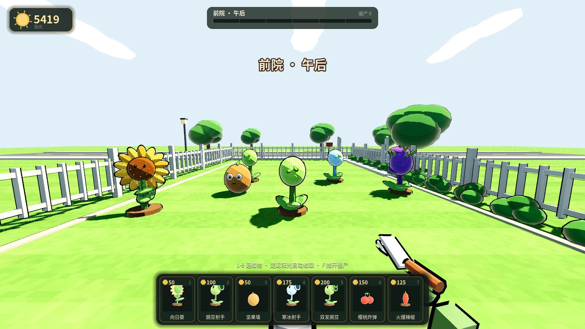
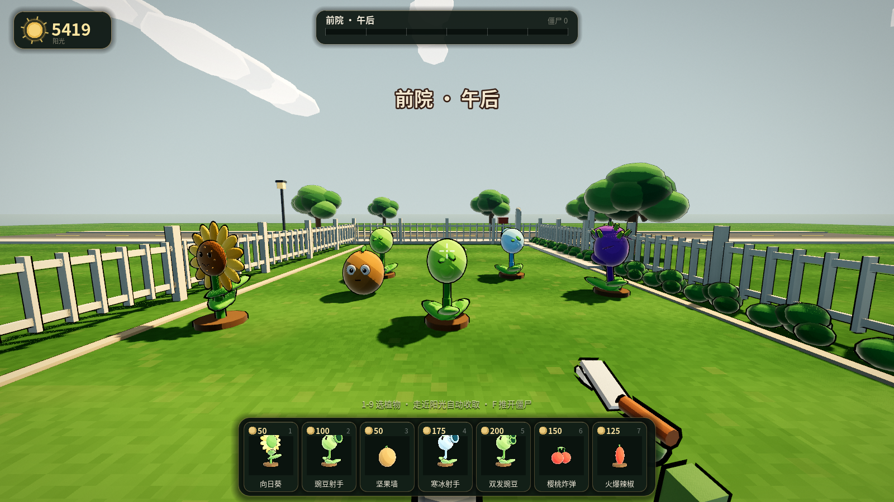
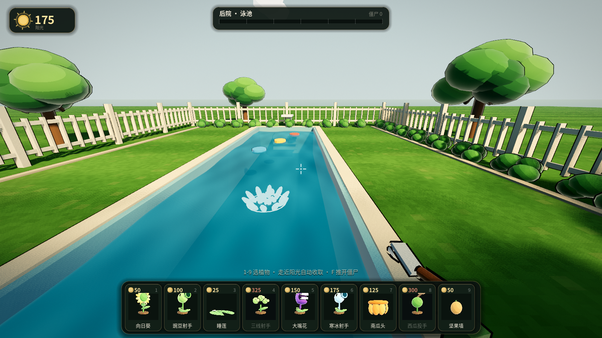
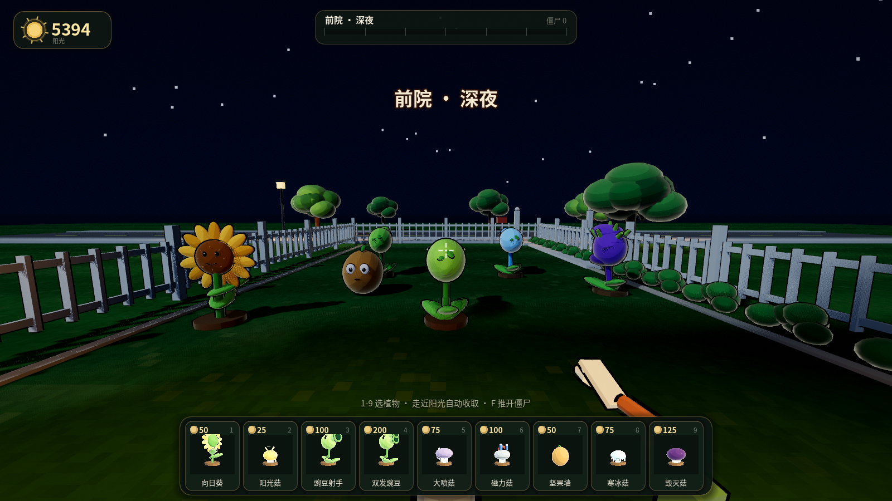
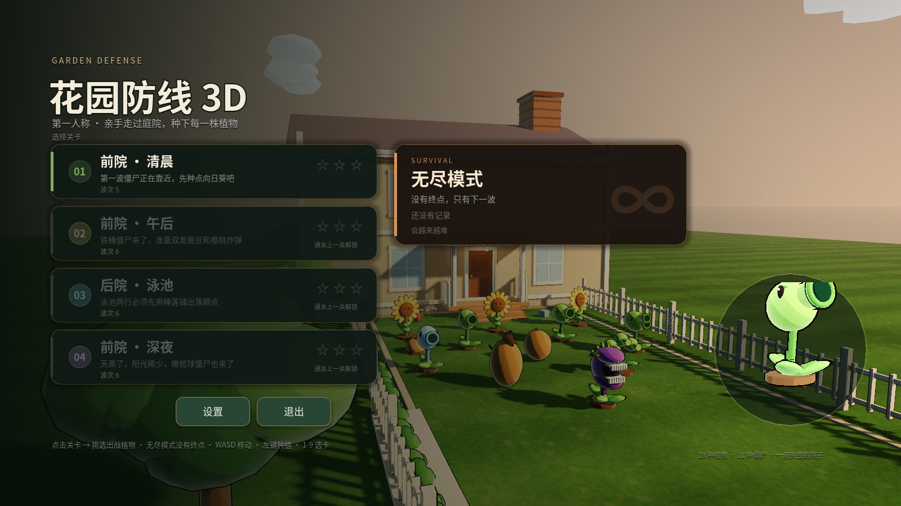
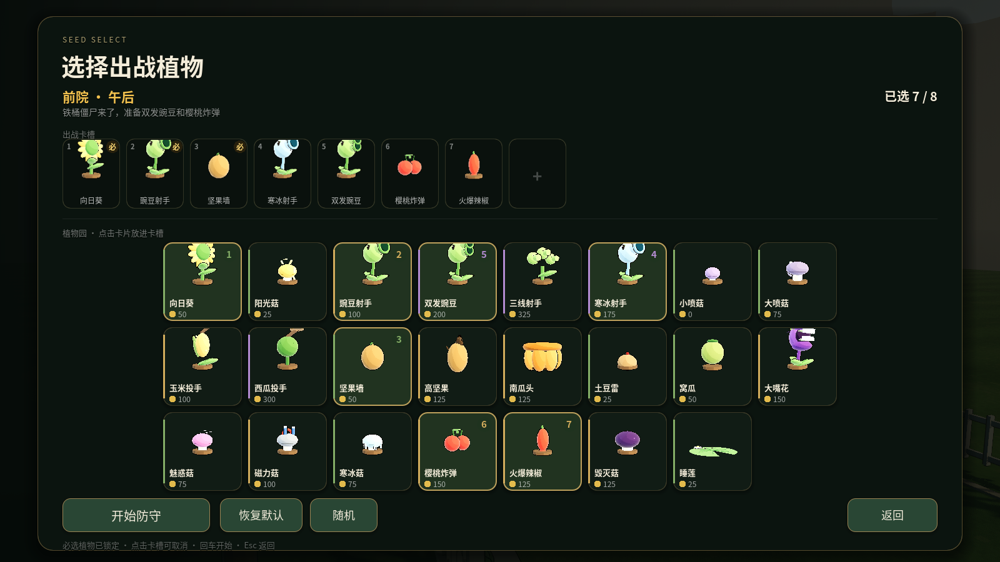

Garden Defense 3D · Art Direction
手绘微缩庭院
保留低多边形轮廓、暖绿色调和墨线描边，把“平涂纸片模型”升级成带颜料层次、空气透视和真实接触阴影的立体庭院。远看仍是原版庭院，近看有材质、光和手工感。
BEFOREAFTER

四条统一原则
01 · 轮廓优先
所有材质升级都服从植物与僵尸的剪影，不改变原版辨识点。
02 · 暖阳冷影
直射光偏奶油金，背光偏蓝绿。阴影有颜色，不再压死成黑色。
03 · 颜料而非塑料
世界空间低强度色差模拟手绘颜料；金属件单独提高光泽。
04 · 植物志式 UI
深苔绿底板、黄铜细边、奶油文字，像庭院里的植物标牌。
具体落地点
材质与光照
- 卡通着色从三段硬切改为“色阶 + 平滑过渡”，保留 32% 手绘渐变。
- 受光面暖色偏移、暗面冷色偏移，增加宽而弱的柔和高光。
- 双层世界空间颜料噪声，抑制大面积纯色的塑料感。
- 描边由纯黑改为暖炭黑并收细；金属水桶等可单独提高
gloss。
环境与场景
- ACES 重新标定曝光；SSAO 半径与强度提升，接触阴影更扎实。
- 雾色按清晨 / 午后 / 泳池 / 深夜分别调色，加入空气透视。
- 草坪增加苔绿斑块、干草斑、亮草尖和柔和割草纹。
- 树冠改为不规则叶团 + 受光顶层；灌木和花境增加层次与金色花心。
水面
- 细分 12×4 → 28×8，法线由真实波高推导。
- 两组交叉波 + 细波；菲涅尔混色，手工微光替代大面积 PBR 反光。
- 去掉会形成白色塑料斑的镜面反射，保留池边矿物白边与水花。
UI 与最终调色
- 统一 12–24px 圆角层级、黄铜描边、柔和投影与悬停金边。
- 阳光、波次、种子卡和关卡卡使用同一套色板与字色。
- 仅对 3D 画面叠加轻分割调色、椭圆暗角和纸纹；HUD 保持锐利。
色板
墨绿 / #101A14
森林 / #274535
叶片 / #648E4D
黄铜 / #D8B25E
奶油 / #F3ECD9
浅水 / #45A7B2
深水 / #06475E
暖阳冷影
实际呈现




预期结果
- 白天：远景有空气透视，草地是深浅不一的苔绿，角色边缘带暖色反光。
- 夜晚：冷光保留暗部细节，HUD 与灯光提供统一的暖色焦点。
- 水面：细波与柔性反光，不再出现大块白色高光。
- 操作层：所有数值、关卡、种植与战斗逻辑完全不变，只升级视觉。
完整技术说明见
godot/ART_DIRECTION.md。验证截图由游戏自身渲染管线生成，未使用外部贴图或换模型。